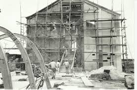
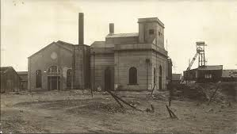

O Início da Mineração
A gênese da exploração do carvão na região está profundamente ligada ao
capital inglês. Pelo
menos desde o ano de 1853, quando James Johnson, mineiro daquela nacionalidade, descobriu a
bacia carbonífera do Herval, obtendo o consentimento do Presidente da Província para proceder à
sua exploração.
 Trabalhadores nas primeiras minas da região.
Trabalhadores nas primeiras minas da região.
Com o auxílio de colonos mineiros oriundos do País de Gales, Johnson passou a produzir carvão em
1855, transportando-o por terra até a Vila de São Jerônimo. Mais tarde, empresas como a
Companhia Estrada de Ferro e Minas de São Jerônymo (CEFMSJ) consolidaram essa indústria que
marcaria a região por mais de um século.
A Era da Usina Termelétrica
No auge da exploração carbonífera, em meados do século XX, foi
construída a Usina Termelétrica de
Charqueadas. Operada pela então Comissão Estadual de Energia Elétrica (CEEE), a usina
representou um marco tecnológico, utilizando o carvão local para gerar energia essencial ao
desenvolvimento do estado.

A imponente estrutura da Usina Termelétrica.
O complexo industrial testemunha a transformação do carvão mineral em energia elétrica,
representando o pioneirismo na extração do minério e o desenvolvimento econômico da época.
A Criação do Museu
Com a desativação das atividades, surgiu a necessidade de preservar
esse legado. O Museu Estadual
do Carvão foi criado oficialmente em março de 1986, pelo Decreto Estadual nº 32.211.

Fachada do Museu, instalado no antigo prédio do Almoxarifado.
O museu é formado por um conjunto arquitetônico e documental remanescente das antigas instalações
das mineradoras que operaram no período de 1853 a 1964, incluindo o prédio do Almoxarifado e a
Usina.
O Acervo Documental
A história da preservação deste acervo é dramática. No ano de
1996, a Associação Cultural
Butiaense (ACUB) foi informada da iminente incineração de dez toneladas de documentos do arquivo
sobre a exploração carbonífera, que seria efetuada pela própria empresa que gerou este acervo.
 Parte das milhares de caixas salvas da destruição.
Parte das milhares de caixas salvas da destruição.
A partir dessa denúncia, a comunidade organizou-se para preservar este acervo, que permaneceu por
doze anos sob a guarda da ACUB em condições precárias, até ser transferido e higienizado. Hoje,
são mais de 700 mil documentos salvos.
Linha do Tempo
Principais marcos históricos da exploração do carvão e da
instituição.
1853
Descoberta
James Johnson redescobre carvão em Arroio dos Ratos e inicia a exploração
sistemática.
1889
Criação da CEFMSJ
Fundação da Companhia Estrada de Ferro e Minas de São Jerônymo, que consolidou a
mineração na região.
1936
Criação do CADEM
Formação do Consórcio Administrador de Empresas de Mineração para gerir as minas de
São Jerônimo e Butiá.
1953
Termelétrica de Charqueadas
Autorização para a instalação da usina termelétrica, um marco na geração de energia a
partir do carvão.
1986
Fundação do Museu
Criação oficial do Museu Estadual do Carvão (Decreto nº 32.211) para preservar a
memória da mineração.
2008
Projeto "Luz no Fim do Túnel"
Início do projeto de resgate e organização do acervo documental que estava em risco.
O Museu Hoje
Atualmente, o Museu Estadual do Carvão continua sua missão de preservar e difundir a história da
mineração. Além de guardar seu rico acervo, oferece exposições que retratam a vida dos mineiros
e a tecnologia da época.

Mesmo diante de desafios recentes, como a recuperação do acervo após enchentes, o museu reafirma
seu compromisso com a memória e a pesquisa.
Estrutura Institucional
O Museu Estadual do Carvão é uma instituição vinculada à
Secretaria de Estado da Cultura
(SEDAC) do Rio Grande do Sul.
Direção e Equipe Técnica
-
Direção:
A ser nomeado
-
Arquivo Histórico:
Equipe técnica responsável pela preservação e
catalogação do acervo documental.
-
Setor Administrativo:
Gestão administrativa e operacional do museu e do
parque.
-
Conselho Estadual de Cultura:
Órgão colegiado de caráter consultivo e
normativo.